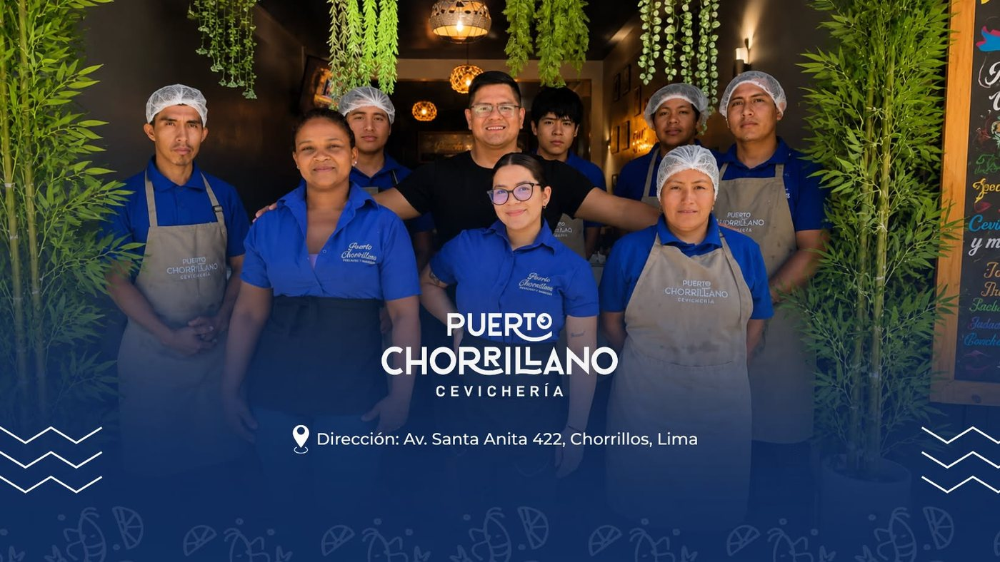
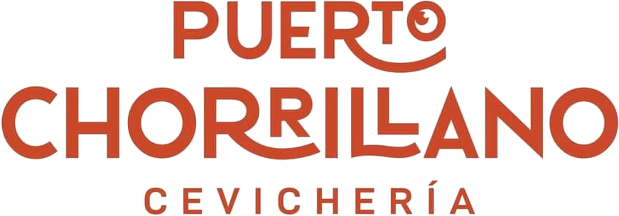

Inicio
Somos apasionados por nuestro sabor y se nota en cada corte, cada ají, cada limón recién exprimido. Ven a probar el mejor ceviche de todo Chorrillos y déjate conquistar 🍋🐟🔥.

Ubicación
Aquí está el point de los retos virales.

Para empezar
- Choritos a la chalaca (8 unds)19
- Langostinos al panko en salsa de maracuyá (6 unds)20
- Conchitas a la parmesana (6 unds)27
- Wantán de langostinos (6 unds)19
Los cevicheros
- Ceviche de pescado28
- Ceviche de conchas negras38
- Ceviche mixto pescado y mariscos34
- Ceviche de pescado y pulpo34
- Ceviche de pescado y langostinos36
Especiales del puerto
- Mariscos a la parrilla35
- Pulpo al olivo28
- Tiradito de pescado28
- Tacu tacu en salsa de mariscos30
- Espagueti en salsa de mariscos30
Para entrar en calor
- Parihuela mixta con pescado40
- Sudado de pescado30
- Chilcano especial25
- Chilcano clásico10
- Chilcano acevichado15
- Chupe de pescado37
- Chupe de langostinos40
Crocantes
- Chicharrón de pescado26
- Chicharrón de mixto34
- Chicharrón de calamar39
- Chicharrón de pota24
- Jalea mixta39
Pa' los causas
- Causa acevichada26
- Causa de pulpa de langostinos26
- Causa de pulpa de cangrejo26
Arroceros
- Arroz con mariscos28
- Chaufa de mariscos27
- Chaufa de pescado27
- Chaufa de langostinos33
Dúos chorrillanos
- Dúo clásico28Ceviche + arroz con mariscos
- Dúo oriental28Ceviche + chaufa de mariscos
- Dúo crocante28Ceviche + chicharrón de pescado
- Dúo carretillero28Ceviche + chicharrón de pota
- Dúo con causa28Ceviche + causa
- Dúo conchas negras36Ceviche de conchas negras + arroz con mariscos
Tríos chorrillanos
- Trío clásico36Ceviche + chicharrón de pescado + arroz con mariscos
- Trío oriental36Ceviche + chicharrón de pescado + chaufa de mariscos
- Trío con causa36Causa + chicharrón de pescado + arroz con mariscos
- Trío ceviche y causa36Ceviche + chicharrón de pescado + causa de pulpa del olivo
- Trío conchas negras45Ceviche de conchas negras + chicharrón de pescado + arroz con mariscos
Rondas marinas chorrillanas
Ronda clásica
- Ceviche de pescado
- Arroz con mariscos
- Chaufa de mariscos
- Causa rellena
- Chicharrón de pescado
S/65
Ronda premium
- Ceviche conchas negras
- Langostinos al panko
- Pulpo al olivo
- Arroz con mariscos
- Wantanes rellenos de langostinos
S/77
Criollos y extras
- Tacu wok c/n lomo saltado28
- Lomo saltado28
- Tallarín saltado28
- Arroz con pato36
- Frejoles con seco de cabrito36